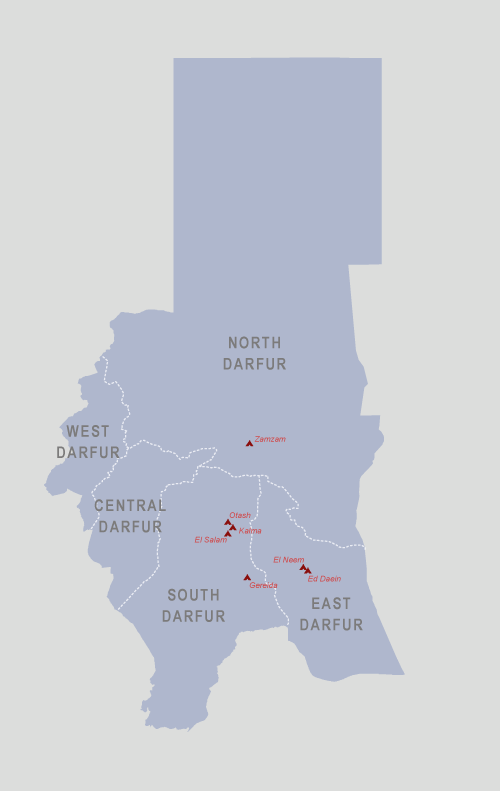
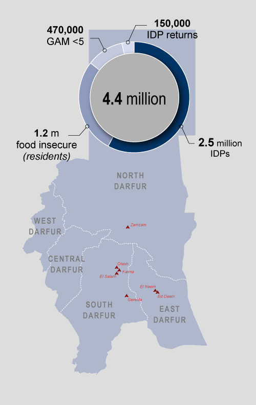
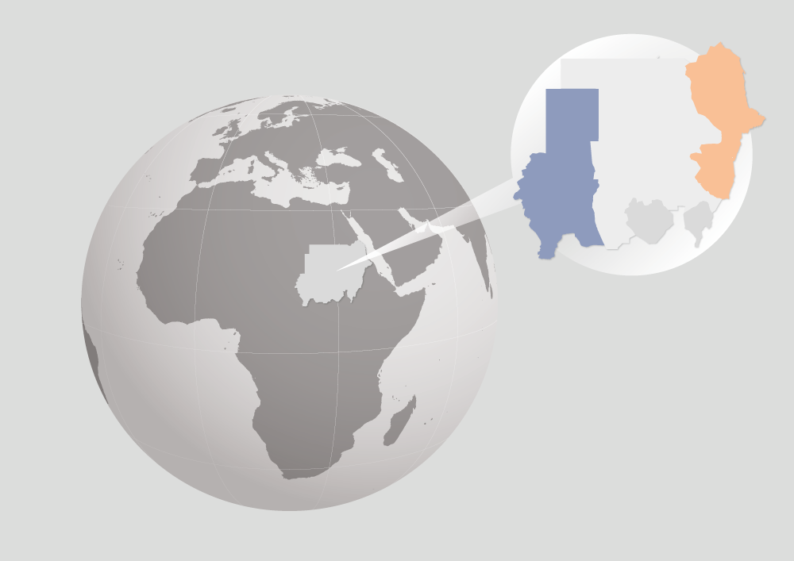
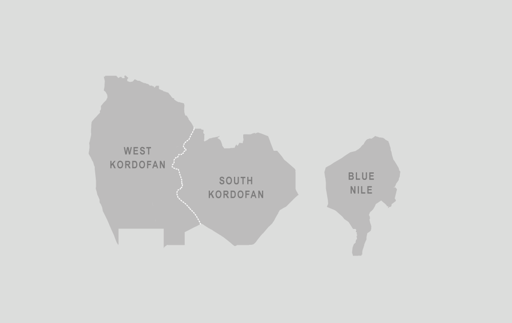
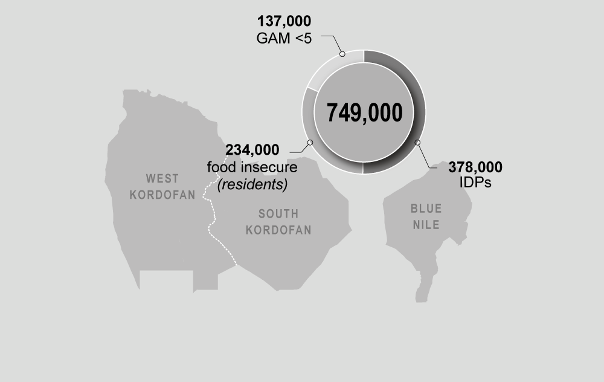
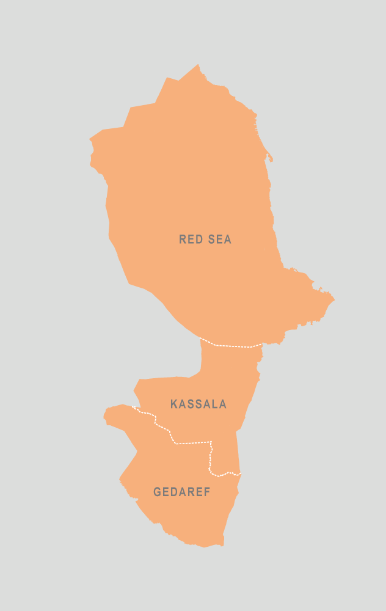
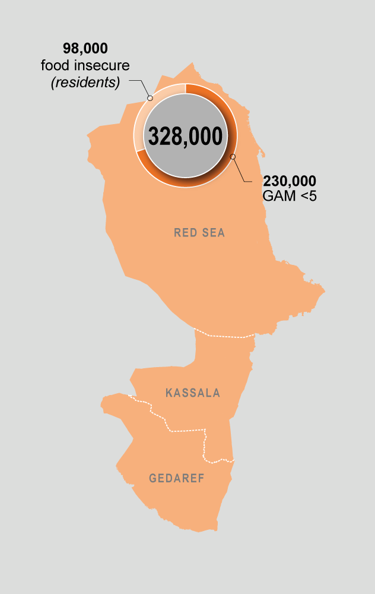

The 2015 Humanitarian Response Plan is the humanitarian community’s strategy for addressing the most urgent humanitarian needs in Sudan. It coordinates the humanitarian activities of UN agencies, international and national NGOs and the Government of Sudan.
Strategic Objectives and Implementation Strategy
Four mutually-reinforcing strategic objectives have been developed to guide humanitarian interventions in 2015. The
strategic objectives identified aim to: (i) ensure coherence with needs-assessment findings; (ii) emphasise cross-cutting
issues, in particular humanitarian protection and resilience; (iii) enhance links
between operational and strategic objectives; and (iv) facilitate multi-sector responses.
1- Emergency relief to vulnerable people affected by conflict and disaster.
2- Provide humanitarian protection to affected people.
3- Reduce food insecurity and malnutrition.
4- Strengthen resilience and facilitate durable solutions.
Humanitarian Needs Remain Essential
Humanitarian needs in Sudan are driven primarily by armed conflict, which causes displacement and food insecurity. Humanitarian needs are also caused by natural hazards (floods and droughts) and underinvestment in social services. As a result of wider instability in the region, tens of thousands of people have also recently fled their countries and sought refuge in Sudan.







The 2015 plan requests US$1,036 million which will allow humanitarians to provide assistance to
5.4 million of the most vulnerable Sudanese
Food Security and Livelihoods $357m
Protection $45m
Refugee Multi-Sector $241m
Recovery, Returns and Reintegration $27m
Nutrition$95m
Emergency shelter and NFI $26m
WASH $69m
Logistics and emergency Telecommunications $31m
Health $65m
Coordination and Common services $19m
Education $60m
Supporting the Humanitarian Response Plan contributes to needs-based humanitarian action guided by the principles of humanity, impartiality, neutrality and independence.
Bilateral support for Humanitarian Response Plan projects: Any donor can provide funding for single projects or specific organizations in the Plan.
The Sudan Common Humanitarian Fund (CHF) is a country-based pooled fund that provides early and predictable funding to NGOs and UN agencies for their response to critical humanitarian needs in Sudan. The Central Emergency Response Fund (CERF) can rapidly fund NGOs and UN agencies to support critical humanitarian activities in sudden onset emergencies. The CERF is also now an expanded instrument to strengthen strategic coordination of resources, in particular to support “time critical” priority projects in the Humanitarian Response Plan, including the winterization response.